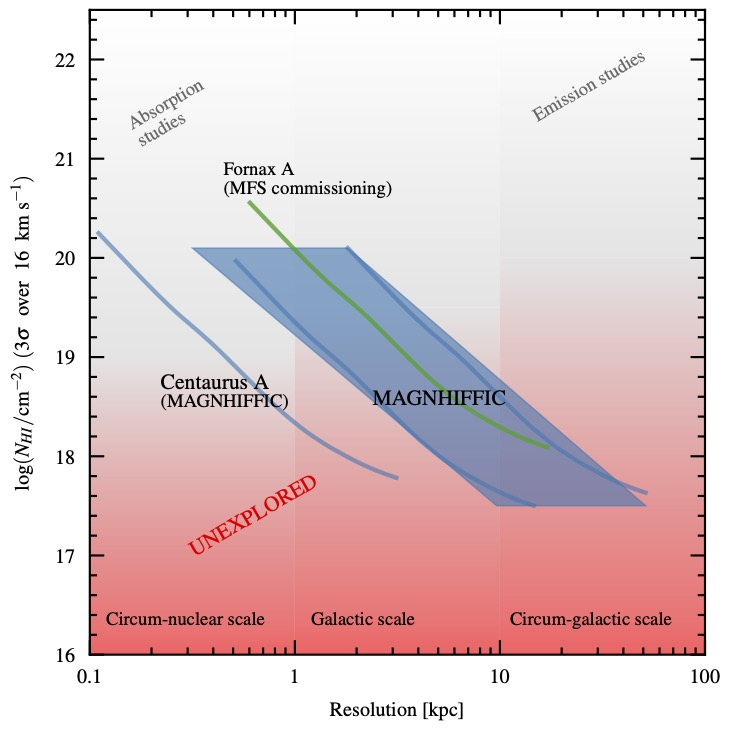

MAGNHIFFIC observes a total of 22 nearby active galaxies with MeerKAT, spanning different energetic outputs, different ages, different host morphologies and different environments. The sample is divided between radiative AGN (10 sources) and radio-jetted AGN (12 sources), and is described here.
The observations reach HI column densities of 1018–19 cm−2 at kilo-parsec resolution or better — at least 10 times deeper in column density than existing HI data of these systems, with spatial and spectral resolution improved by at least a factor 3. This is a part of parameter space in AGN studies that has not yet been observed with any radio telescope.
The figure on this page shows the HI column density sensitivity reached by MAGNHIFFIC as a function of angular resolution, compared with existing HI observations of AGN hosts.
